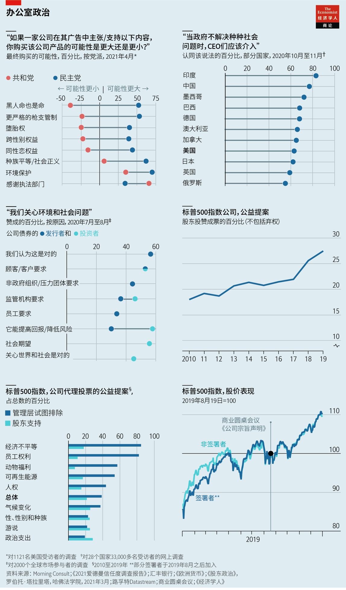
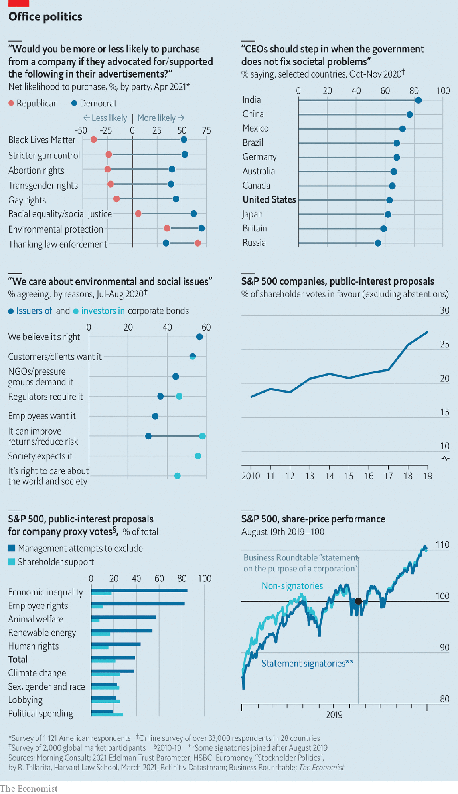

2021-04-30T16:02:23+00:00
从握手到握拳
美国的CEO行动主义是在冒险
企业过去和政治保持距离。哪里出了问题？
如果你的公司和可口可乐一样是美国和谐的象征，你在打政治牌的时候会非常小心，尤其是在种族和投票这样容易造成分歧的问题上。这家软饮料公司在1964年的做法绝妙。当时民权领袖马丁·路德·金在获得诺贝尔和平奖后返回故乡亚特兰大（也是可口可乐的诞生地），当地的精英们扬言要抵制他。可能出现的尴尬场面让可口可乐不寒而栗，公司时任和前任高管们于是在私下悄悄说服了其他企业家出席一场为金举行的晚宴。他们甚至唱起了《我们一定会胜利》（We Shall Overcome）这首歌。
今年，可口可乐也涉足了是非地。3月31日，佐治亚州的共和党州长布莱恩·肯普（Brian Kemp）签署了一项在批评者看来会压制黑人选民的新法律，可口可乐在这前后都有所行动。在该法案通过之前，可口可乐小心翼翼地试图软化其中的部分条款，结果引来了双重炮轰。先是多个民权组织指责它懦弱。当老板詹鲲杰（James Quincey）之后加入达美航空等其他亚特兰大的本土公司，对法案结果表示失望时，共和党人给它和其他公司扣上了“警醒文化”伪君子的帽子。
4月14日，包括亚马逊和谷歌等巨头在内的几百家公司以及巴菲特等知名商界人士发表了一封联名信，反对提高投票门槛的“任何歧视性立法”。一位有头有脸的签名者——制药公司默克（Merck）的肯尼斯·弗雷泽（Kenneth Frazier）——告诉《纽约时报》，这次行动应当超越党派之见。用曾经担任过CEO、现在就职于哈佛商学院的威廉·乔治（William George）的话来说，压制选民“把民主置于险境，继而把资本主义置于险境”。
为了圆特朗普称自己连任失败是因为大范围欺诈的弥天大谎，共和党人一直在推动相关法案。他们称企业指手画脚是赤裸裸的政治行为。然而，这么多家喻户晓的品牌和董事会的大人物不断加入到对历来亲商的共和党摇手说“不”的阵营中，表明他们准备打破自美国资本主义诞生以来对企业大有好处的政治沉默准则。这是为什么？最终又会对他们的生意产生怎样的影响？
美国企业界是建基于有限责任公司这项法律创新之上的。最初，这样的公司结构仍然需要获得政府许可才能运营，这常常需要贿赂众多官员。19世纪上半叶，一连串的法庭裁决让公司得以与政治保持距离。之后，它们需要的只是雄心壮志和心甘情愿的投资者。结果就是造就了有史以来最繁荣的商业环境。
上世纪初，一些老板重新发现了政治，用公司财富在政府中勾朋结党。第二次世界大战后，工业界与政界之间的大门与其说是旋转的，不如说是敞开的。上世纪四五十年代，通用电气的老板“电气查理”·威尔逊和通用汽车的老板“引擎查理”·威尔逊曾在几届政府中任职。按政府的“眼中钉”、经济学家约翰·肯尼斯·加尔布雷斯（John Kenneth Galbraith）的话说，一直延续到上世纪60年代的这段时间就是“抗衡力量”时期：大企业与大政府和大工会之间的角力势均力敌。一些CEO表现得像工业政治家——为工人提供终身职位，建设村庄和高尔夫球场，并以社会守护者的形象示人。
1970年，诺贝尔奖得主、自由放任经济学的领军人物米尔顿·弗里德曼撼动了这种平衡。他认为，CEO只需要对股东负责。只要市场自由、竞争激烈，股东价值最大化就会有助于社会，因为这能确保为客户提供更好的产品，为工人提供更好的工作条件。而这两条只要有一条做不到，公司就将看到自己的客户和员工转投竞争对手。罗纳德·里根等共和党人信奉弗里德曼的思想，他们缩减政府规模，放松对经济的管制。这催生了上世纪八九十年代超级明星公司的兴起以及对名人CEO的崇拜。
即便如此，企业家们在政治问题上还是保持缄默。他们相信花钱请来的说客，并利用商业圆桌会议（Business Roundtable）等行业组织替自己奔走活动。游说几乎只涉及直接关系到自身盈亏的事务，比如税收、法规，或可能影响到员工队伍的移民政策。他们刻意让自己置身于更广泛的政治喧嚣之外。
企业的资金持续流入政界。但近些年，它伴随着一股并行的CEO行动主义的潮流。公关公司万博宣伟（Weber Shandwick）认为这种现象始于2004年。当时旅游公司卡尔森酒店（Carlson Companies）的老板玛里琳·卡尔森·纳尔逊（Marilyn Carlson Nelson）明确表示反对性交易。同行的老板们认为这样的声明会损害旅游业的中立形象。结果客户们却将她捧为英雄。其他行业的CEO们注意到了这点。他们开始就各种话题发表意见，一开始还很谨慎，但在过去五年左右的时间里变得更加高调，涉及的话题从“我也是”（#MeToo）、“黑人命也是命”（#Black Lives Matter）等运动，到宗教自由法律、枪支管制、同性恋权利和跨性别厕所法案等。特朗普一些造成分歧的行动，比如临时禁止部分穆斯林国家公民入境、退出《巴黎气候协定》、对夏洛茨维尔（Charlottesville）的种族主义抗议事件的反应等，引起了美国企业界的普遍愤怒（尽管特朗普的减税计划它们也笑纳了）。
特朗普上台时也正值这样一个时期：公众对政府的信任度已经下降，而对商业的信任度在增加。尽管美国企业界被看作是无情的资本主义的女仆，但美国人对企业的信任度还是略高于对政府或非政府组织。另一家公关公司爱德曼（Edelman）发现，63%的美国人认为，当政府不解决社会问题时，CEO们应该介入。作为对这种呼声的响应，2019年8月，包括150家标普500蓝筹股公司的老板在内的商业圆桌会议成员承诺，公司在做决策时不仅考虑股东，还会考虑员工、供应商、客户、环境和其他“利益相关者”。
问题是，这类CEO倡议的动机和影响力都不明确——无论是对议题本身的影响还是对加入倡议的企业的影响。尽管很多倡议很可能是善意的，却因为有伪善和哗众取宠的嫌疑而含混不清。去年圣诞节前，北面（North Face）因为不想让自己的品牌与化石燃料联系在一起，拒绝了得克萨斯一家石油公司400件高价冲锋衣的订单。上个月，科罗拉多州的一个石油工业行业组织半开玩笑地给北面颁发了“非凡客户奖”，它指出北面的许多服装产品都是用石油制品制成的，包括它的冲锋衣。
就对热点问题的影响而言，如果企业行动主义导致它所针对的党派一意孤行，可能就会事与愿违。耶鲁大学管理学院的杰弗里·索南菲尔德（Jeffrey Sonnenfeld）承认其中涉及党派之争。他在4月10日组织了一次活动，请一些CEO讨论选举法。他相信商界和拜登在中间地带有共同利益。面对来自“自由派精英” ——许多老板都被认为属于该群体——的反对，共和党人可能会更有胆量推进限制性的选举法——只是为了戳对手痛处。
CEO们声称，对于社会关切的问题，除了亲自应对，他们别无选择，因为在社交媒体时代，客户、员工和股东有这样的要求。对于这种说法，相关证据混杂不一。
先说消费者。一些民意调查显示，两个党派各自的支持者会分别从立场偏右或偏左的公司购买更多商品。但其他研究发现，消费者更有可能记住的是自己因反对某位CEO的言论而停用的产品，而不是因支持某位CEO而开始使用的产品。沃尔玛在2019年一家门店发生枪击案后，禁止了一些枪支弹药的销售。随后的一项研究发现，受此影响，沃尔玛在共和党选区的客流量的跌幅比在民主党选区的增幅更大。
对员工的影响也没有定论。知识经济中的许多科技公司都乐于展示自己的左翼倾向，相信这会吸引那些持同样观点的优秀的千禧一代员工。但这可能会走过头。保守倾向的咨询公司Lincoln Network发现，推动政治议程的公司可能具有令人压抑的一元内部文化，这会扼杀而不是促进创造力。
再说股东。老板们在发表政治声明之前很少征求股东的意见。哈佛法学院的卢西恩·拜伯切克（Lucian Bebchuk）发现，在商业圆桌会议上签署声明承诺造福利益相关者的人当中，可以查到相关信息的48人中只有一人事先咨询过董事会。这透露出很多亲社会的言论不过是嘴上说说而已。
投资者似乎也是这么看的。从上述声明的字面意思看，股东将必须与其他利益相关者分享获利。但不管是老板签署了该声明的标普500指数公司，还是CEO不在签名者之列的公司，股价表现几乎相同。这表明市场并不认为这些言论具有实质重要性。在支持利益相关者资本主义上口号喊得最响的一些公司，如Salesforce，尽管营收创了纪录，却仍在新冠疫情期间裁员。这样的现实表明投资者的看法可能是对的。
最终，股东们自己可能会变得更具政治倾向。考虑环境、社会和治理（ESG）因素的投资基金的兴起表明，投资者在配置资本时期望看到企业对某些社会问题持一定的立场。ESG投资者通常愿意接受那些与行善指标关联的企业债券稍低一些的收益率。同样来自哈佛法学院的罗伯托·塔拉里塔（Roberto Tallarita）研究了标普500指数公司十年来从经济不平等到动物福利等形形色色的公益提案，发现这样的提案几乎无一获通过。但它们获得的支持在上升。2010年，平均有18%的股东投票支持这类提案。到2019年，这一比例上升到了28%。有朝一日，董事们可能会变得像老板们一样关心政治。与此同时，CEO们自以为是的发声应该只会越来越响亮。
2021-04-30T16:02:23+00:00
From handshake to clenched fist
CEO activism in America is risky business
Firms used to keep politics at arm’s length. What went wrong?
IF YOU ARE an emblem of American harmony like Coca-Cola, you play your politics carefully, especially on issues as divisive as race and voting. The soft-drinks company did so brilliantly in 1964 when the elite of Atlanta—home to both Coca-Cola and Martin Luther King—threatened to snub the civil-rights leader on his return from winning the Nobel peace prize. Appalled at the potential embarrassment, Coca-Cola’s current and former executives worked quietly behind the scenes to persuade other industrialists to attend a dinner in King’s honour. They even sang “We Shall Overcome”.
Coca-Cola has weighed in this year, too, before and after Brian Kemp, Georgia’s Republican governor, signed a new law on March 31st that critics said would suppress black voters. The firm’s discreet efforts to soften aspects of the bill before its passage backfired twice over. First, civil-rights groups accused it of pusillanimity. When its boss, James Quincey, subsequently joined other Atlanta natives such as Delta Air Lines in expressing disappointment at the outcome, Republicans branded Coke and the others “woke” hypocrites.
On April 14th hundreds of companies, including giants like Amazon and Google, and big-name businesspeople, among them Warren Buffett, published a letter opposing “any discriminatory legislation” making it harder to vote. One prominent signatory, Kenneth Frazier of Merck, a drugmaker, told the New York Times it was meant to be non-partisan. In the words of William George of Harvard Business School, himself a former CEO, voter suppression “puts democracy at risk, and that puts capitalism at risk”.
Republicans, who have been pushing the bills in response to Donald Trump’s big lie that he was denied a second presidential term by widespread fraud, call the corporate finger-wagging nakedly political. That so many household brands and boardroom grandees nevertheless increasingly wag their fingers at the traditionally business-friendly Republican Party shows that they are prepared to break a code of political silence that has served corporations well since the dawn of American capitalism. Why? And what effect will it ultimately have on their business?
America Inc was built on top of a legal innovation: the limited liability company. Originally such corporate structures still needed to secure a government charter to operate, which often involved greasing plenty of official palms. A succession of court rulings in the first half of the 19th century allowed firms to put politics at arm’s length. Afterwards they needed only ambition and willing investors. The result was the most fecund business environment of all time.
In the early 20th century some bosses rediscovered politics, using their companies’ wealth to buy cronies in government. In the aftermath of the second world war, the door between industry and political office was not so much revolving as wide open. “Electric Charlie” Wilson, boss of General Electric, and “Engine Charlie” Wilson, boss of General Motors, worked for several administrations in the 1940s and 1950s. The period until the 1960s was a time of what John Kenneth Galbraith, a gadfly economist, called “countervailing power”. Big business was in a well-balanced scrum with big government and big labour. Some CEOs behaved like industrial statesmen, offering jobs for life to workers, building villages and golf courses, and presenting themselves as guardians of society.
That equilibrium was shaken in 1970 by Milton Friedman, a Nobel-prizewinning champion of laissez-faire economics. He argued that executives’ sole responsibility was to shareholders. So long as markets were free and competition fierce, maximising shareholder value would help society, by ensuring better products for customers and better conditions for workers. Firms that failed on either count would see buyers and employees defect to rivals. Republicans like Ronald Reagan embraced Friedman through shrinking government and deregulating the economy. This gave rise to superstar firms and the cult of the celebrity CEO in the 1980s and 90s.
Even so, businessmen held their tongues on political matters. Instead, they put their faith in paid lobbyists and used industry groups like the Business Roundtable to campaign on their behalf. The lobbying concerned almost exclusively matters of direct concern to their bottom lines, such as taxes, regulations or immigration policies that might affect their employees. They studiously kept out of the broader political hurly-burly.
Corporate cash continues to flow into politics. But in recent years it is accompanied by a parallel stream of CEO activism. Weber Shandwick, a public-relations firm, dates this phenomenon back to 2004, when Marilyn Carlson Nelson, boss of Carlson Companies, a travel business, took a stand against sex trafficking. Her fellow travel bosses thought such pronouncements would hurt the industry’s neutral image. Instead, she was treated as a heroine by customers. CEOs in other industries took note. Gingerly at first and more conspicuously in the past five years or so, they began weighing in on subjects from the #MeToo and Black Lives Matter movements to religious-freedom laws, gun control, gay rights and transgender-bathroom bills. Mr Trump’s divisive actions, such as a temporary ban on visitors from some Muslim countries, withdrawal from the Paris climate agreement or reaction to racist protests in Charlottesville, caused outrage across corporate America (even as it lapped up his tax cuts).
Mr Trump’s tenure also coincided with a period when public trust in government was already in decline, while that in business was rising. Despite corporate America’s image as handmaiden of heartless capitalism, Americans trust business a bit more than they do government or NGOs. Edelman, another PR firm, finds that 63% of Americans think CEOs should step in when governments do not fix societies’ problems. Heeding the call, in August 2019 members of the Business Roundtable, including bosses of 150 blue chips in the S&P 500 index, pledged to consider not just shareholders but also workers, suppliers, customers, the environment and other “stakeholders” in corporate decisions.
The trouble with such CEO advocacy is a lack of clarity about its motivations and impact—on the issues themselves, as well on the businesses in whose name it is undertaken. Although a lot of it is probably well-meaning, it is muddied by suspicions of hypocrisy and grandstanding. Before Christmas The North Face rejected an order from a Texas oil company for 400 of its pricey outdoor jackets because it did not want its brand associated with fossil fuels. Last month an oil-industry group in Colorado awarded the company a tongue-in-cheek “extraordinary customer award”. It noted that many of its clothing products are made with products of petroleum—including its jackets.
In terms of its impact on hot-button issues, corporate activism can backfire if it causes the party against which it is directed to dig in its heels. Jeffrey Sonnenfeld of the Yale School of Management, who organised a gathering of CEOs on April 10th to discuss voter laws, acknowledges partisanship is involved. He believes both business and Mr Biden share a common interest in the centre ground. In the face of opposition from “liberal elites”, to which many bosses are seen to belong, Republicans may be more emboldened to press on with restrictive voter laws—just to rub it in.
Chief executives claim that they simply have no choice but to tackle societal concerns because in the age of social media their customers, employees and shareholders demand it. The evidence for such assertions is mixed.
Start with consumers. Some polls show that supporters of each party would buy more goods from companies that lean either right or left. But other research has found that consumers were more likely to remember a product they stopped using in protest at what a CEO said rather than one they started using in support. After a shooting spree in one of its superstores in 2019 Walmart banned some sales of gun ammunition. A subsequent study found that footfall in Walmart stores in Republican districts fell more sharply as a result than it rose in Democratic ones.
The impact on employees is also inconclusive. Many tech firms in the knowledge economy are happy to wear their leftie leanings on their sleeves, believing this will attract bright millennial workers who tend to share such views. But it can go too far. Lincoln Network, a conservative-leaning consultancy, found that firms promoting a political agenda can have an oppressive internal monoculture, which stifles creativity rather than fostering it.
Then there are the shareholders. Bosses rarely consult them before making political statements. Lucian Bebchuk of Harvard Law School found that among signatories of the Business Roundtable’s stakeholder pledge only one of 48 for whom data were available had consulted their board beforehand. That suggests a lot of the pro-social rhetoric is lip service.
Investors seem to see it that way. The share prices of S&P 500 companies whose bosses signed that declaration—which, if taken at face value, would mean that shareholders would have to share the spoils with other stakeholders—performed almost identically to those of companies whose CEOs were not among the signatories. That implies that markets did not consider the rhetoric to be of material importance. The fact that some of the loudest proponents of stakeholder capitalism, such as Salesforce, laid off workers amid the pandemic despite record revenues suggests that investors may be onto something.
In time, shareholders themselves may become more political. The rise of investment funds that consider environmental, social and governance (ESG) factors suggests an appetite for certain forms of social stance-taking when allocating capital. ESG investors are often willing to accept somewhat lower yields for corporate bonds tied to some do-gooding metrics. After studying ten years’ worth of public-interest proposals at S&P 500 companies, on everything from economic inequality to animal welfare, Roberto Tallarita, also of Harvard Law School, found that virtually no such motions pass. But support for them is on the rise. In 2010 18% of shareholders voted for them, on average. By 2019 this had risen to 28%. One day the boardroom may become as political as the corner office. In the meantime, CEO pontificating is likely only to get louder. ■
2021-04-30T16:02:23+00:00
從握手到握拳
美國的CEO行動主義是在冒險
企業過去和政治保持距離。哪裡出了問題？
如果你的公司和可口可樂一樣是美國和諧的象徵，你在打政治牌的時候會非常小心，尤其是在種族和投票這樣容易造成分歧的問題上。這家軟飲料公司在1964年的做法絕妙。當時民權領袖馬丁·路德·金在獲得諾貝爾和平獎後返回故鄉亞特蘭大（也是可口可樂的誕生地），當地的精英們揚言要抵制他。可能出現的尷尬場面讓可口可樂不寒而慄，公司時任和前任高管們於是在私下悄悄說服了其他企業家出席一場為金舉行的晚宴。他們甚至唱起了《我們一定會勝利》（We Shall Overcome）這首歌。
今年，可口可樂也涉足了是非地。3月31日，佐治亞州的共和黨州長布萊恩·肯普（Brian Kemp）簽署了一項在批評者看來會壓制黑人選民的新法律，可口可樂在這前後都有所行動。在該法案通過之前，可口可樂小心翼翼地試圖軟化其中的部分條款，結果引來了雙重炮轟。先是多個民權組織指責它懦弱。當老闆詹鯤傑（James Quincey）之後加入達美航空等其他亞特蘭大的本土公司，對法案結果表示失望時，共和黨人給它和其他公司扣上了“警醒文化”偽君子的帽子。
4月14日，包括亞馬遜和谷歌等巨頭在內的幾百家公司以及巴菲特等知名商界人士發表了一封聯名信，反對提高投票門檻的“任何歧視性立法”。一位有頭有臉的簽名者——製藥公司默克（Merck）的肯尼斯·弗雷澤（Kenneth Frazier）——告訴《紐約時報》，這次行動應當超越黨派之見。用曾經擔任過CEO、現在就職於哈佛商學院的威廉·喬治（William George）的話來說，壓制選民“把民主置於險境，繼而把資本主義置於險境”。
為了圓特朗普稱自己連任失敗是因為大範圍欺詐的彌天大謊，共和黨人一直在推動相關法案。他們稱企業指手畫腳是赤裸裸的政治行為。然而，這麼多家喻戶曉的品牌和董事會的大人物不斷加入到對歷來親商的共和黨搖手說“不”的陣營中，表明他們準備打破自美國資本主義誕生以來對企業大有好處的政治沉默準則。這是為什麼？最終又會對他們的生意產生怎樣的影響？
美國企業界是建基於有限責任公司這項法律創新之上的。最初，這樣的公司結構仍然需要獲得政府許可才能運營，這常常需要賄賂眾多官員。19世紀上半葉，一連串的法庭裁決讓公司得以與政治保持距離。之後，它們需要的只是雄心壯志和心甘情願的投資者。結果就是造就了有史以來最繁榮的商業環境。
上世紀初，一些老闆重新發現了政治，用公司財富在政府中勾朋結黨。第二次世界大戰後，工業界與政界之間的大門與其說是旋轉的，不如說是敞開的。上世紀四五十年代，通用電氣的老闆“電氣查理”·威爾遜和通用汽車的老闆“引擎查理”·威爾遜曾在幾屆政府中任職。按政府的“眼中釘”、經濟學家約翰·肯尼斯·加爾布雷斯（John Kenneth Galbraith）的話說，一直延續到上世紀60年代的這段時間就是“抗衡力量”時期：大企業與大政府和大工會之間的角力勢均力敵。一些CEO表現得像工業政治家——為工人提供終身職位，建設村莊和高爾夫球場，並以社會守護者的形象示人。
1970年，諾貝爾獎得主、自由放任經濟學的領軍人物米爾頓·弗里德曼撼動了這種平衡。他認為，CEO只需要對股東負責。只要市場自由、競爭激烈，股東價值最大化就會有助於社會，因為這能確保為客戶提供更好的產品，為工人提供更好的工作條件。而這兩條只要有一條做不到，公司就將看到自己的客戶和員工轉投競爭對手。羅納德·里根等共和黨人信奉弗里德曼的思想，他們縮減政府規模，放鬆對經濟的管制。這催生了上世紀八九十年代超級明星公司的興起以及對名人CEO的崇拜。
即便如此，企業家們在政治問題上還是保持緘默。他們相信花錢請來的說客，並利用商業圓桌會議（Business Roundtable）等行業組織替自己奔走活動。遊說幾乎只涉及直接關係到自身盈虧的事務，比如稅收、法規，或可能影響到員工隊伍的移民政策。他們刻意讓自己置身於更廣泛的政治喧囂之外。
企業的資金持續流入政界。但近些年，它伴隨着一股並行的CEO行動主義的潮流。公關公司萬博宣偉（Weber Shandwick）認為這種現象始於2004年。當時旅遊公司卡爾森酒店（Carlson Companies）的老闆瑪里琳·卡爾森·納爾遜（Marilyn Carlson Nelson）明確表示反對性交易。同行的老闆們認為這樣的聲明會損害旅遊業的中立形象。結果客戶們卻將她捧為英雄。其他行業的CEO們注意到了這點。他們開始就各種話題發表意見，一開始還很謹慎，但在過去五年左右的時間裡變得更加高調，涉及的話題從“我也是”（#MeToo）、“黑人命也是命”（#Black Lives Matter）等運動，到宗教自由法律、槍支管制、同性戀權利和跨性別廁所法案等。特朗普一些造成分歧的行動，比如臨時禁止部分穆斯林國家公民入境、退出《巴黎氣候協定》、對夏洛茨維爾（Charlottesville）的種族主義抗議事件的反應等，引起了美國企業界的普遍憤怒（儘管特朗普的減稅計劃它們也笑納了）。
特朗普上台時也正值這樣一個時期：公眾對政府的信任度已經下降，而對商業的信任度在增加。儘管美國企業界被看作是無情的資本主義的女僕，但美國人對企業的信任度還是略高於對政府或非政府組織。另一家公關公司愛德曼（Edelman）發現，63%的美國人認為，當政府不解決社會問題時，CEO們應該介入。作為對這種呼聲的響應，2019年8月，包括150家標普500藍籌股公司的老闆在內的商業圓桌會議成員承諾，公司在做決策時不僅考慮股東，還會考慮員工、供應商、客戶、環境和其他“利益相關者”。
問題是，這類CEO倡議的動機和影響力都不明確——無論是對議題本身的影響還是對加入倡議的企業的影響。儘管很多倡議很可能是善意的，卻因為有偽善和嘩眾取寵的嫌疑而含混不清。去年聖誕節前，北面（North Face）因為不想讓自己的品牌與化石燃料聯繫在一起，拒絕了得克薩斯一家石油公司400件高價衝鋒衣的訂單。上個月，科羅拉多州的一個石油工業行業組織半開玩笑地給北面頒發了“非凡客戶獎”，它指出北面的許多服裝產品都是用石油製品製成的，包括它的衝鋒衣。
就對熱點問題的影響而言，如果企業行動主義導致它所針對的黨派一意孤行，可能就會事與願違。耶魯大學管理學院的傑弗里·索南菲爾德（Jeffrey Sonnenfeld）承認其中涉及黨派之爭。他在4月10日組織了一次活動，請一些CEO討論選舉法。他相信商界和拜登在中間地帶有共同利益。面對來自“自由派精英” ——許多老闆都被認為屬於該群體——的反對，共和黨人可能會更有膽量推進限制性的選舉法——只是為了戳對手痛處。
CEO們聲稱，對於社會關切的問題，除了親自應對，他們別無選擇，因為在社交媒體時代，客戶、員工和股東有這樣的要求。對於這種說法，相關證據混雜不一。
先說消費者。一些民意調查顯示，兩個黨派各自的支持者會分別從立場偏右或偏左的公司購買更多商品。但其他研究發現，消費者更有可能記住的是自己因反對某位CEO的言論而停用的產品，而不是因支持某位CEO而開始使用的產品。沃爾瑪在2019年一家門店發生槍擊案後，禁止了一些槍支彈藥的銷售。隨後的一項研究發現，受此影響，沃爾瑪在共和黨選區的客流量的跌幅比在民主黨選區的增幅更大。
對員工的影響也沒有定論。知識經濟中的許多科技公司都樂於展示自己的左翼傾向，相信這會吸引那些持同樣觀點的優秀的千禧一代員工。但這可能會走過頭。保守傾向的諮詢公司Lincoln Network發現，推動政治議程的公司可能具有令人壓抑的一元內部文化，這會扼殺而不是促進創造力。
再說股東。老闆們在發表政治聲明之前很少徵求股東的意見。哈佛法學院的盧西恩·拜伯切克（Lucian Bebchuk）發現，在商業圓桌會議上籤署聲明承諾造福利益相關者的人當中，可以查到相關信息的48人中只有一人事先諮詢過董事會。這透露出很多親社會的言論不過是嘴上說說而已。
投資者似乎也是這麼看的。從上述聲明的字面意思看，股東將必須與其他利益相關者分享獲利。但不管是老闆簽署了該聲明的標普500指數公司，還是CEO不在簽名者之列的公司，股價表現幾乎相同。這表明市場並不認為這些言論具有實質重要性。在支持利益相關者資本主義上口號喊得最響的一些公司，如Salesforce，儘管營收創了紀錄，卻仍在新冠疫情期間裁員。這樣的現實表明投資者的看法可能是對的。
最終，股東們自己可能會變得更具政治傾向。考慮環境、社會和治理（ESG）因素的投資基金的興起表明，投資者在配置資本時期望看到企業對某些社會問題持一定的立場。ESG投資者通常願意接受那些與行善指標關聯的企業債券稍低一些的收益率。同樣來自哈佛法學院的羅伯托·塔拉里塔（Roberto Tallarita）研究了標普500指數公司十年來從經濟不平等到動物福利等形形色色的公益提案，發現這樣的提案幾乎無一獲通過。但它們獲得的支持在上升。2010年，平均有18%的股東投票支持這類提案。到2019年，這一比例上升到了28%。有朝一日，董事們可能會變得像老闆們一樣關心政治。與此同時，CEO們自以為是的發聲應該只會越來越響亮。